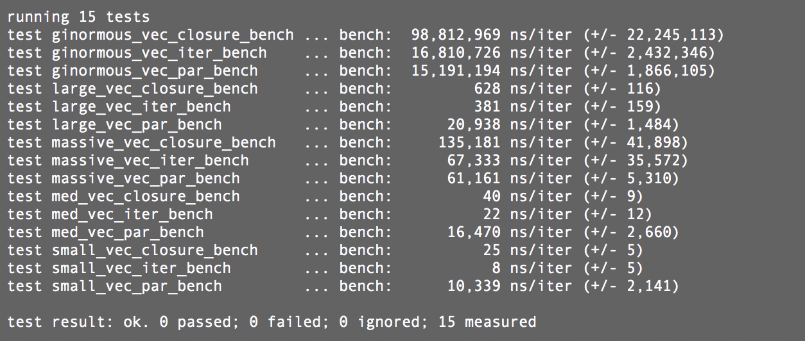

Welcome
My name is Ricky and welcome to my Markdown blog!
I built this site to share some technical writings and play around with fun things. I used mdbook to build this blog found here it is pretty awesome and written in Rust!
Stay tunned for more, and hopefully a less corny about me section.
Rust Benchmarking
Normal Couples Talk
Recently my wife and I were talking about Rust and Rust loops (as a totally normal couple does). We were wondering what the faster way of traversing a loop were a for loop with .iter() or a closure from the .iter(). Turns out the answer is it depends! Normally I'm dealing with bytes (so u8) and doing fairly easy math over a vector and .iter() is slightly faster; however anything more complex a closure is the Rust way and faster.
Onto the Benchmarking
So the best way to test this is using Rust Nightly and the cargo bench feature. This involves using the Bencher crate. I found the documentation great, but I wanted to write up a post describing the full process of setting up the tests.
Cargo.toml
Included in theCargo.toml file are:
[dependencies]
rayon = "*"
rand = "*"
bencher = "*"
[[bench]]
name = "main"
harness = false
Here [[bench]] is the trigger for the Benches crate to look into a benches folder (at the top level with src and target) for the file main.rs This is the file the cargo bench command will run on. The reason I called this main here instead of a proper test name is, for this example I just symbolicly linked the main under src to the benches folder. I am a heathen I know, but it got the job done. Normally we would import our crate and set up a separate test suite.
main.rs
First, well do the extern crate and use dance:
# #![allow(unused_variables)] #fn main() { extern crate rayon; extern crate rand; #[macro_use] extern crate bencher; use bencher::Bencher; use rayon::prelude::*; use rand::{thread_rng, Rng}; #}
Next, we will set up the functions we want to test. The Bencher crate will test everything in the function so we want to make sure we're not loading or creating data in the function or our test results will be off:
# #![allow(unused_variables)] #fn main() { fn vec_iter(test_vec: &mut Vec<u8>) -> () { for i in test_vec.iter_mut() { *i += 1; } } fn vec_par(test_vec: &mut Vec<u8>) { test_vec.par_iter_mut().for_each(|i| *i +=1); } fn vec_closure(test_vec: &mut Vec<u8>) { test_vec.iter_mut().map(|i| *i+1).collect::<Vec<_>>(); } #}
Keep in mind this is all outside of a main function. Next we will set up the functions for bench here's the first three in my code:
# #![allow(unused_variables)] #fn main() { fn small_vec_par_bench(bench: &mut Bencher) { let mut small_vec: Vec<u8> = Vec::with_capacity(20); unsafe {small_vec.set_len(20)} thread_rng().fill_bytes(&mut small_vec); bench.iter(|| {vec_par(&mut small_vec)}); } fn small_vec_iter_bench(bench: &mut Bencher) { let mut small_vec: Vec<u8> = Vec::with_capacity(20); unsafe {small_vec.set_len(20)} thread_rng().fill_bytes(&mut small_vec); bench.iter(|| {vec_iter(&mut small_vec)}); } fn small_vec_closure_bench(bench: &mut Bencher) { let mut small_vec: Vec<u8> = Vec::with_capacity(20); unsafe {small_vec.set_len(20)} thread_rng().fill_bytes(&mut small_vec); bench.iter(|| {vec_closure(&mut small_vec)}); } #}
Again, I know I am a heathen so ignore the unsafe blocks for this example. Let's look at the function, first the parameter to the signature is a bench instance bench: &mut Bencher. This is a struct that runs our code several times to get the timing information with a +/- value for more accuracy. Next I am setting up the test data just some arbitrary bytes filled with the rand function. Finally we call that function in the bench.iter() closure form. This will test just what we put in the closure for the timing tests.
For completeness here's the rest of my tests:
# #![allow(unused_variables)] #fn main() { fn med_vec_par_bench(bench: &mut Bencher) { let mut med_vec: Vec<u8> = Vec::with_capacity(1000); unsafe {med_vec.set_len(1000)} thread_rng().fill_bytes(&mut med_vec); bench.iter(|| {vec_par(&mut med_vec)}); } fn med_vec_iter_bench(bench: &mut Bencher) { let mut med_vec: Vec<u8> = Vec::with_capacity(1000); unsafe {med_vec.set_len(1000)} thread_rng().fill_bytes(&mut med_vec); bench.iter(|| {vec_iter(&mut med_vec)}); } fn med_vec_closure_bench(bench: &mut Bencher) { let mut med_vec: Vec<u8> = Vec::with_capacity(1000); unsafe {med_vec.set_len(1000)} thread_rng().fill_bytes(&mut med_vec); bench.iter(|| {vec_closure(&mut med_vec)}); } fn large_vec_par_bench(bench: &mut Bencher) { let mut large_vec: Vec<u8> = Vec::with_capacity(20000); unsafe {large_vec.set_len(20000)} thread_rng().fill_bytes(&mut large_vec); bench.iter(|| {vec_par(&mut large_vec)}); } fn large_vec_iter_bench(bench: &mut Bencher) { let mut large_vec: Vec<u8> = Vec::with_capacity(20000); unsafe {large_vec.set_len(20000)} thread_rng().fill_bytes(&mut large_vec); bench.iter(|| {vec_iter(&mut large_vec)}); } fn large_vec_closure_bench(bench: &mut Bencher) { let mut large_vec: Vec<u8> = Vec::with_capacity(20000); unsafe {large_vec.set_len(20000)} thread_rng().fill_bytes(&mut large_vec); bench.iter(|| {vec_closure(&mut large_vec)}); } fn massive_vec_par_bench(bench: &mut Bencher) { let mut massive_vec: Vec<u8> = Vec::with_capacity(2000000); unsafe {massive_vec.set_len(2000000)} thread_rng().fill_bytes(&mut massive_vec); bench.iter(|| {vec_par(&mut massive_vec)}); } fn massive_vec_iter_bench(bench: &mut Bencher) { let mut massive_vec: Vec<u8> = Vec::with_capacity(2000000); unsafe {massive_vec.set_len(2000000)} thread_rng().fill_bytes(&mut massive_vec); bench.iter(|| {vec_iter(&mut massive_vec)}); } fn massive_vec_closure_bench(bench: &mut Bencher) { let mut massive_vec: Vec<u8> = Vec::with_capacity(2000000); unsafe {massive_vec.set_len(2000000)} thread_rng().fill_bytes(&mut massive_vec); bench.iter(|| {vec_closure(&mut massive_vec)}); } fn ginormous_vec_par_bench(bench: &mut Bencher) { let mut ginormous_vec: Vec<u8> = Vec::with_capacity(200000000); unsafe {ginormous_vec.set_len(200000000)} thread_rng().fill_bytes(&mut ginormous_vec); bench.iter(|| {vec_par(&mut ginormous_vec)}); } fn ginormous_vec_iter_bench(bench: &mut Bencher) { let mut ginormous_vec: Vec<u8> = Vec::with_capacity(200000000); unsafe {ginormous_vec.set_len(200000000)} thread_rng().fill_bytes(&mut ginormous_vec); bench.iter(|| {vec_iter(&mut ginormous_vec)}); } fn ginormous_vec_closure_bench(bench: &mut Bencher) { let mut ginormous_vec: Vec<u8> = Vec::with_capacity(200000000); unsafe {ginormous_vec.set_len(200000000)} thread_rng().fill_bytes(&mut ginormous_vec); bench.iter(|| {vec_closure(&mut ginormous_vec)}); } #}
Finally we need to tell the bencher which functions to include and test. We do this by first naming and then giving the function signatures to a benchmark_group!() macro (hence the #[marco_use] on our crate import).
# #![allow(unused_variables)] #fn main() { benchmark_group!(benches, small_vec_iter_bench, small_vec_par_bench, small_vec_closure_bench, med_vec_iter_bench, med_vec_par_bench, med_vec_closure_bench, large_vec_iter_bench, large_vec_par_bench,large_vec_closure_bench, massive_vec_iter_bench, massive_vec_par_bench, massive_vec_closure_bench, ginormous_vec_closure_bench, ginormous_vec_iter_bench, ginormous_vec_par_bench); #}
Lastly, a macro call to the benchmark_main!()giving it the group we wish to test.
# #![allow(unused_variables)] #fn main() { benchmark_main!(benches); #}
Results and Conclusion
That's it! We can now run cargo bench and get some results! Here's the results on my Macbook Pro (3.1 GHz Intel Core i5):

Overall the benchmark suite is really easy to use, because you use closures to send off the exact code to test it is also very accurate. So go refactor some code and performance test to get the most out of Rust!
Kitty's First Programming Challenge
We recently started doing some programming challenges on the slack channel with my friends and the challenge was simple yet, very difficult!
Challenge 1:
Write FizzBuzz in a language you have never used before, OR in the MOST creative way possible!
For those who do not know these are the rules of FizzBuzz:
----------------------------------------------------------------------
If a number is divisible by 3, print "Fizz",
If a number is divisible by 5, print "Buzz",
If a number is divisible by both 3 and 5 print "FizzBuzz",
If a number is NOT divisible by 3 or 5 print the number
I think this was an interesting take on the challenge we got submissions in lolcode, Scratch, Obfuscated C#, EmojiCode, and my submission in KittenLang.
{kind=link}
For those who don't know about KittenLang (like me about a week ago) it is a stack based programming language. This means the compiler takes input and pushes that onto the stack so to add and multiplywould be like this:
$ 2
> 2
$ 2
> 2
> 2
$ +
> 4
$ 3
> 3
> 4
$ *
> 12
So this was an interesting challenge because of the way you have to loop over the range of numbers. To keep the challenge simple a CSV was provided and I wrote the code with 0..100 included in the source :).
Then I was able to define a function that took an Int32 as input and spit a List<Char> to stdout for the user. Below is my code:
#KITTEN LANG
define fizzbuzz (Int32 -> +IO +Fail) -> x: if ( x % 15 = 0 ) { "FizzBuzz" say } elif ( x % 5 = 0 ) { "Buzz" say } elif ( x % 3 = 0 ) { "Fizz" say } else { x say }
[0,1,2,3,4,5,6,7,8,9,10,11,12,13,14,15,16,17,18,19,20,21,22,23,24,25,26,27,28,29,30,31,32,33,34,35,36,37,38,39,40,41,42,43,44,45,46,47,48,49,50,51,52,53,54,55,56,57,58,59,60,61,62,63,64,65,66,67,68,69,70,71,72,73,74,75,76,77,78,79,80,81,82,83,84,85,86,87,88,89,90,91,92,93,94,95,96,97,98,99,0,1,2,3,4,5,6,7,8,9,10,11,12,13,14,15,16,17,18,19,20,21,22,23,24,25,26,27,28,29,30,31,32,33,34,35,36,37,38,39,40,41,42,43,44,45,46,47,48,49,50,51,52,53,54,55,56,57,58,59,60,61,62,63,64,65,66,67,68,69,70,71,72,73,74,75,76,77,78,79,80,81,82,83,84,85,86,87,88,89,90,91,92,93,94,95,96,97,98,99,100] \fizzbuzz each
You can see how to define the function pretty plainly but calling it with the \\ preceeding it means that I am calling the entire function on the input,rather than evaluating the expression given incase I definted a function with the same name as a keyword or if the letters themselved were past variables or keywords on the stack. The each keyword means that I am running the function on each item of the array. At first I was using the map function, which I still believe should work, but that in the langague wiki page (which is imcomplete :(), says that it maps each result to an array I believe since I am returning to stdout that was casuing a program and with the way the language was handling strings I could not quite figure out how to utilize the map keyword properly for this langauge.
That was it! A fun little challenge that introduced me into a new langauge and an entirely differnt style of programming.
Programming Challenges
Old School
There are a lot of really good websites out there for mini-programming challenges and puzzles like Exercism, Hacker Rank, and Code Academy. These are really good for learning and definitely fill a need within the community. Yet, a lot of times they often fall short of challenging or diverse problems. For example, CodeAcademy is great for beginners and learning the syntax of a language but tends to fall short of difficult assignments and there's often ways to just print or return exactly what the step expects to "win."
The New Cool
I was reading a few articles a while back on Hacker News and stumbled across the Spotify developer's blog which like most highly technical companies details a little of their infrastructure and a handful of cool little technology successes that they can share with the public. The best little tidbit was the puzzle page I discovered after finishing one of their articles.
Now this something I can definitely get behind. The tech sector hiring process is flawed to say the least, so Spotify is throwing some public challenges to the masses to see what people respond with, and the cool part is the are interesting, directly relatable to their business, and they are pretty difficult. I would really like to see more companies doing this for people. It's a good way to gain some interest in their company and seeing who might be suited/come up with a really great solution.
The one downside is the restriction of language choice, but that's not really on them, it's probably on their testing tooling in the background based on the output and the (hopefully) protected environment in which they run it.
If you know any one else who does this hit me up on Twitter!
My Late 2016 MacBook Pro
So since it is all the rage the past couple of months I figured I would also review my experience with the late-2016 MBP (you know TOUCHBAR!). Just to give you an idea I've had a Mac all the way back since the G2 Mac Pros existed and the colored iMacs in class rooms. Ever since thing I was an Apple supporter. I have always liked Apple because they were Unix, truly lasted forever, and looked awesome. Sure they might be a little more expensive that most laptops but I had my last 3 laptops for a combined total of 12 years. That's an amazing record when you think about it.
Still in my opinion one of the best things about Apple is I have a Terminal! The only Windows device we have in the house is an Xbox One and I am so happy wth that. I use a CentOS 7 Desktop at home and at work for when I need a desktop (Gaming, some programming but most programming can be done or test on my laptop). The way that I can very easily transition from one computer to the other is awesome. I even have my .bashrc profiles and the environment setup script detect if I am on Darwin or a version of linux.
The Form and Looks
I really do LOVE the way MacBook Pros have looked for a long time. At one point I had a white iBook right before they switched to the MacBooks I had a 15" first Generation MacBook Pro a long time ago (and I'll never go back to a laptop that big again) and it was ALL the envy when I was in my senior year of high school and college. I then had the black MacBook and my brother has been using that same exact computer for 6 years! I'll also throw in the fact that he's not the most computer literal person (one of those people that store ALL their files on the Desktop). The MacBook has nobly held on for dear life until December 2015. That's when I upgraded to the MacBook Pro and sent him my 2011 MacBook Air. I really loved my MacBook Air and was disappointed, that is until I received this model.
This model is the thinest, lightest, blah blah blah... What's it like in real life? It's actually really great. The screen is the perfect size (13") for me. The MacBook Air I had was a 11.5: and that was just far too small. It was difficult to browse the web, let alone try to code anything at all. The laptop (even when compared to the previous generation 13", which my wife has) is much lighter and more solid feeling than I thought it would be. It also sits nicely on your legs or on the coffee table while you type. I've been fairly uncomfortable when typing or browsing with the MacBooks I have had previous but this one is pretty awesome.
The Keyboard and Trackpad
Keyboard
I'm the guy at work using the custom built PC with the old (or chiclet) Apple keyboards. To me they usually hit the nail on the head for what I like out of keyboard. I'm not huge fan of the mechanical keyboards with their loud noise, but I do love a gaming keyboard for it's uses and comfort (I have a Logitech G510 at home for my Linux workhorse). This keyboard is amazing, hands down. I had no idea I was going to love it as much as I did. I feel both the old style chunky dell keyboard and the new style Apple "Chiclet" keyboard in this. It's amazing the feedback you get while typing and the huge keys are welcomed in this world of netbooks and jammed together keyboards to save space. I also love the backlighting there's almost no light leaking and it is very crisp and lights all keys evenly.
Trackpad
The Trackpad is also huge and it's pretty great. The form factor is nice I usually do have enough room to move all around the screen using the space without lifting my finger. I really like this so much more than a touch screen laptop which has me poking in my viewing range. I always turn off the tap-to-click feature on a laptop (I'm a bit heavy handed) so I never had the issue of accidental clicks using my palms I never really even see the mouse jump when my thumb-palms (shut up it's a thing) hit the trackpad (which they will). I also really like the haptic feedback you get from the Trackpad and the multi-press and added gestures they put in. I use multiple work spaces a lot so having those features in are really helpful for the way I (attempt) to multitask.
The Software and Specs and Screen
I am pretty firmly in the camp of having a laptop for fun and travel and a desktop that's the work horse. So I am completely fine with the specs I currently have (3.1GHz i5, 8GB RAM). I do not understand why you would really need more then 16GB in a laptop (especially one that you cannot change the memory on yourself...who would really buy that memory from Apple with their markup?!). This thing is FAST (especially when you factor in the SSD read and write speeds)! I was also coming from a 1.6GHz and 2GB MacBook Air.
The software that came pre-loaded is pretty nice. The best part is that it was fairly light weight and I can now remove more apps without MacOS complaining! I do experience some weird full screen issues when working within Firefox (my preferred browser) in full screen. These took place mostly after the most recent update. I haven't been able to pinpoint if it actually is Firefox in fullscreen or if it is some heat/power issue. See the video below for the example:

The screen is so bright. About 99% of the time I'm on half brightness. Even when the auto-adjust kicks in I manually will turn it down because this screen can fry your eyes like the sun. So dear Apple RELEASE NIGHT MODE FOR ALL THE APPLICATIONS! I cannot tell you how many times I went from browsing Reddit (using Stylish and night mode) to check my calendar or email to have my eyes physically hurt from the blinding white I get. There should be a night mode on all the things!
The Touchbar
So the major feature...the touchbar the enemy of the programmer or power user. Not really. In all honestly it really like it isn't even there if you don't want it to be. "BUT no esc key!" you might be thinking. Well, guess what I'm typing this in...Vim! and I reach my pinky up to use the esc key if I need to and find it just fine (real Vim users map esc to Caps lock anyways). Sure it might not have that awesome contour or click feedback the keyboard gives off but it is there and it is fine, pretty much end of story.
The only thing I really use the touchbar for is touchID. I use it for unlocking the computer (maybe I'll have some fun and try to hack it) and the system preferences. I use it on the iPhone 7 as well and I like it a lot. I think it saves a lot of time and it's "secure" enough for me (insert crazy hack article from DEFCON or somewhere). I also downloaded a few Apps (Rocket, Nyan Cat, and TouchPong). So really I have one useful thing with the Touchbar, Rocket. It's a nifty little App that essentially puts Alt-Tab on the touchbar to switch the active Workspace or display to the app you select. I re-mapped the keyboard shortcut to CMD-. because its close together and I can do it quickly with one hand. There's another app called TouchSwitcher that puts the alt-tab like behavior on the touch bar as a standard set. However, if you're in an app like Safari, Calendar, or mail you won't be able to see the switcher and there's no keyboard shortcut at the time of writing this.
I really liked Jonathan Hollin's idea on making the next generation have haptic feedback. Just like the iPhone it would vibrate slightly when you did a keypress, and you can set it to only respond to a hard-press, brush, or touch.
The Battery
So there's probably the biggest feature that's been written about so far. I have not had much of an issue with the battery. I don't use my laptop for work and I'm not on it during the day
(aside from the weekends) So I get about 7 hours of batter life normally. I did have a reoccurring issue where there was a stuck process somewhere completely trashing my batter life (~2 hours on a full charge). This issue (I could not figure it out with top or ps aux) was persistent even after putting the laptop to sleep. It wasn't until I shut the laptop down for a night that I returned to my normal battery life.
I also don't do much intensive work while not plugged into a charger. I do some Rust work and compile a few small programs but nothing large like Servo I do plan to put my laptop against my wife's' last generation MBP. As long as I don't get a stuck process I do get great battery life. Even while web browsing, pulling email from 3/4 accounts, chatting, controlling ChromeCasts etc all at once it does last around 7-8 hours.
TL;DR
Thanks again to Jonathan Hollin for the inspiration to write up something about the new MBP.
So far I am REALLY happy with the purchase. Sure it was a bit expensive (thank god for the student discount and a master's degree :D). The screen is amazing and using an old keyboard is just crap now. Sure the TouchBar is a bit gimmick-y and I don't use it, but the best thing is it doesn't get in the way at all. It also makes app switching, brightness, and volume just a little bit quicker to use. I do not use many Apple specific apps (I use Firefox) all the time but I'm trying Mail, Calendar, and Messages to see the features they have been slamming into them. I just wish I had more of a choice what was permanently on the TouchBar (such as my Battery Health 2 app)!
main()
Using mdbook I can do a lot of fun things like Math: \[ \int x = \frac{x^2}{2} \]
AND I can even send Rust code to the rust playground
fn main() { let thanks = "Thanks for viewing ricky.hosfelt.io/blog!"; println!("{}", thanks); }